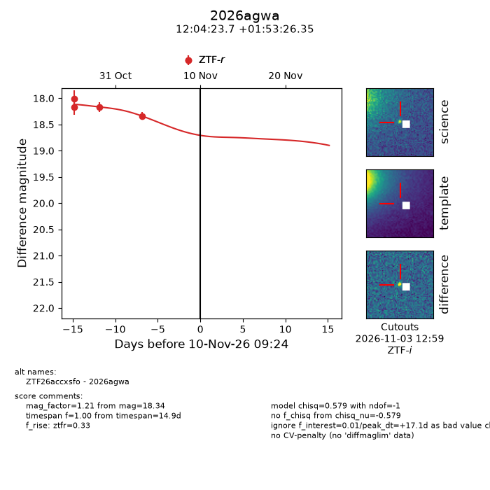
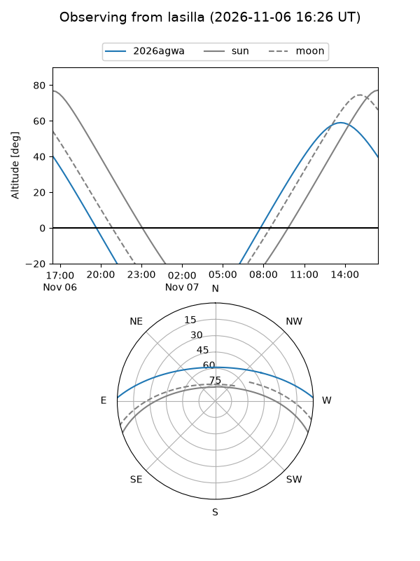
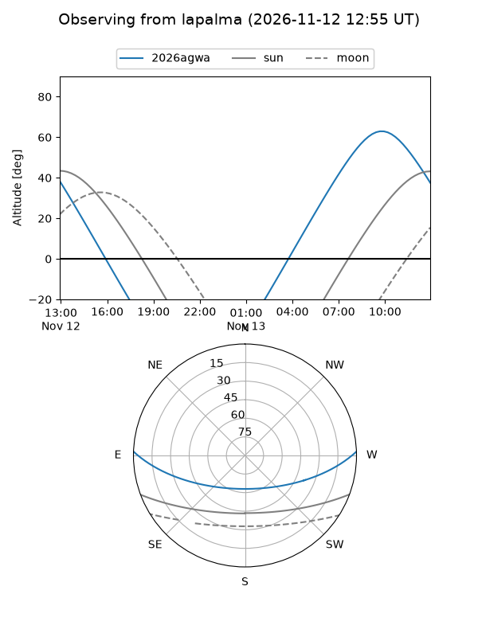
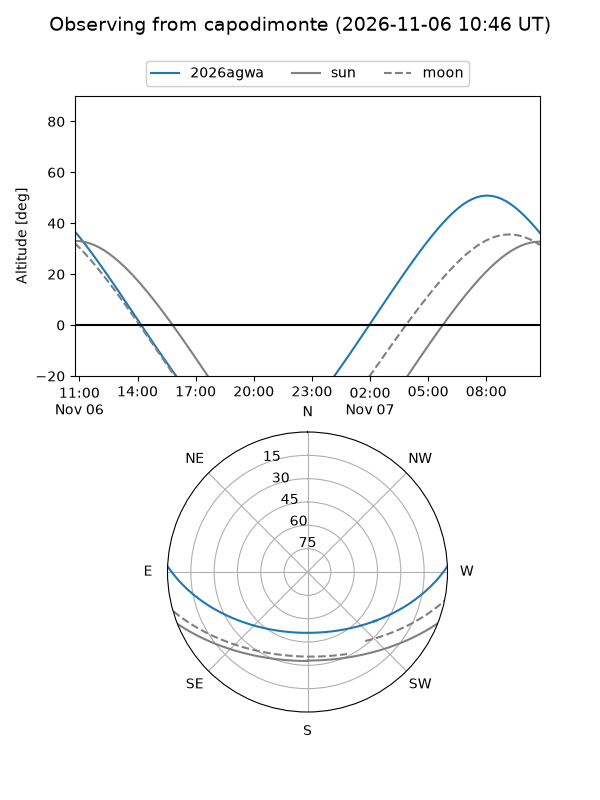
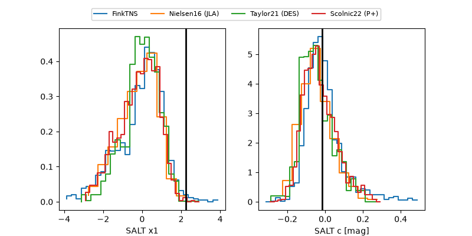

2026agwa
Target 2026agwa at 2026-11-10 09:27
Aliases and brokers:
FINK-ZTF: ztf.fink-portal.org/ZTF26accxsfo
Lasair-ZTF: lasair-ztf.lsst.ac.uk/objects/ZTF26accxsfo
ALeRCE-ZTF: alerce.online/object/ZTF26accxsfo
YSE-PZ: ziggy.ucolick.org/yse/transient_detail/2026agwa
TNS name: wis-tns.org/object/2026agwa
Direct TNS query: direct search
alt names
ZTF26accxsfo (ztf,fink_ztf)
2026agwa (tns,yse)
Coordinates:
equatorial (ra, dec) = 181.0986,+1.89065
equatorial (HMS+DMS) = 12:04:23.66,+01:53:26.35
galactic (l, b) = (276.8845,+62.35925)
Flags:
peak dt: +17.1
Photometry:
last ztfr=18.34
4 ztfr detections
Lightcurve

Visibility



Additional plots
